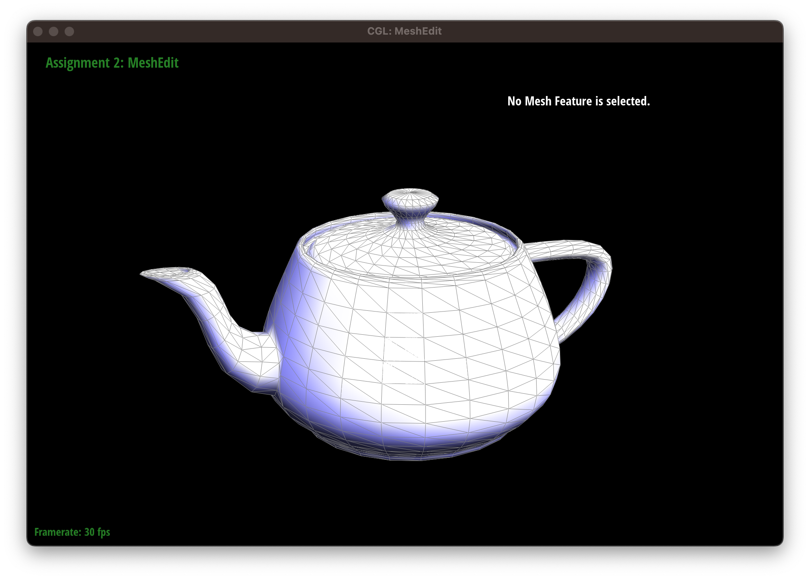

Project 1: Rasterizer
Abdul Ali Khan, Zachary Zollman
Overview
In this assignment, We implemented Bezier curves and surfaces using de Casteljau's algorithm. The algorithm recursively evaluates the curve by dividing the control points into two subsets and calculating intermediate control points along the curve until a final point is reached. We used the algorithm to evaluate Bezier curves and surfaces and provided screenshots to show the intermediate steps.We also implemented area-weighted vertex normals for triangle meshes. The area-weighted vertex normal at a given vertex is the weighted average of the normals of the adjacent faces, where each weight is proportional to the area of the corresponding face that shares the vertex. We provided screenshots to show the difference between shading with and without vertex normals.
Finally, we implemented an edge flip operation for local remeshing of a triangle mesh. The flip operation swaps the diagonal of a quadrilateral formed by two adjacent triangles, which can improve the quality of the mesh. We provided screenshots to show the effect of the edge flip operation on the mesh.
Through this assignment, we learned about de Casteljau's algorithm for evaluating Bezier curves and surfaces, as well as the importance of normal vectors for shading in computer graphics. We also learned about local remeshing operations such as edge flip and how they can improve the quality of a mesh.
Section I: Bezier Curves and Surfaces
Part 1: Bezier Curves with 1D de Casteljau Subdivision
De Casteljau's algorithm is a recursive method to evaluate a Bezier curve. It works by dividing the control points into two subsets and calculating intermediate control points along the curve until a final point is reached.The evaluateStep function uses a simplified version of de Casteljau's algorithm to evaluate a Bezier curve. It takes an input vector of control points and calculates the intermediate points along the curve using the current value of t. The function iterates over each pair of adjacent control points and calculates a new point on the curve using the current value of t. This new point is then added to a vector of intermediate points. The function returns this vector of intermediate points, which can be used to draw the Bezier curve.
Note that this function only calculates a single step of the de Casteljau algorithm, so it needs to be called multiple times with different values of t in order to fully evaluate the curve.
std::vector BezierCurve::evaluateStep(std::vector const &points)
{
std::vector result;
int result_size = points.size() - 1;
for (int i= 0; i < result_size; i++)
{
Vector2D new_point = (1 - t) * points[i] + t * points[i + 1];
result.push_back(new_point);
}
return result;
}


Part 2: Bezier Surfaces with Separable 1D de Casteljau
The de Casteljau algorithm can be extended to evaluate Bezier surfaces by first evaluating a set of Bezier curves along one axis (e.g. u-axis) using the algorithm for 1D Bezier curves. The resulting set of points are then used as control points for another set of Bezier curves along the other axis (e.g. v-axis). The final point on the surface is then obtained by evaluating the resulting curve at a specific value of v.The evaluateStep function is the same as in the 1D Bezier curve case, but is called with a vector of control points for one of the axes of the surface. The evaluate1D function uses a while loop to repeatedly call evaluateStep until only one point remains. This final point represents the evaluation of the Bezier curve along one of the axes.
The evaluate function first evaluates the set of Bezier curves along one axis (using evaluate1D) to obtain a set of control points for the other axis. It then evaluates another set of Bezier curves along the other axis (again using evaluate1D) to obtain the final point on the surface.
The algorithm is used to recursively subdivide the control points of a Bezier surface into smaller sets until a final point is reached, allowing for the evaluation of the surface at any given u,v position.
std::vector BezierPatch::evaluateStep(std::vector const &points, double t) const
{
std::vector result;
int result_size = points.size() - 1;
for (int i = 0; i < result_size; i++)
{
Vector3D new_point = (1 - t) * points[i] + t * points[i + 1];
result.push_back(new_point);
}
return result;
}
Vector3D BezierPatch::evaluate1D(std::vector const &points, double t) const
{
std::vector new_points = points;
while (new_points.size() > 1)
{
new_points = evaluateStep(new_points, t);
}
return new_points[0];
}
Vector3D BezierPatch::evaluate(double u, double v) const
{
std::vector other_axis;
other_axis.reserve(controlPoints.size());
for (const auto &controlPoint : controlPoints)
{
other_axis.push_back(evaluate1D(controlPoint, u));
}
return evaluate1D(other_axis, v);
}

Section II: Triangle Meshes and Half-Edge Data Structure
Part 3: Area-Weighted Vertex Normals
The area-weighted vertex normal at a given vertex is a vector that is the weighted average of the normals of the adjacent faces, where each weight is proportional to the area of the corresponding face that shares the vertex.The normal() function calculates the area-weighted vertex normal for a given vertex. We first initialize the result vector and the total area to zero. We then iterate over the half-edges that are adjacent to the vertex.
For each half-edge, we calculate the cross product of the vectors formed by the positions of the adjacent vertices of the current half-edge and the next two half-edges, which gives the normal of the corresponding triangle. We add this normal to the result vector and increments the total area by half of the norm of the cross product. This is because the area of a triangle is proportional to the norm of its cross product. Finally, the function returns the normalized result vector divided by the total area, which gives the area-weighted vertex normal.
Vector3D Vertex::normal(void) const
{
HalfedgeCIter edge = halfedge();
Vector3D result = Vector3D();
double area = 0;
do
{
Vector3D p1 = edge->vertex()->position;
Vector3D p2 = edge->next()->vertex()->position;
Vector3D p3 = edge->next()->next()->vertex()->position;
Vector3D n1 = cross(p2 - p1, p3 - p1);
result += n1;
area += n1.norm() / 2;
edge = edge->twin()->next();
} while (edge != halfedge());
return result / area;
}

Part 4: Edge Flip
The edge flip operation swaps the diagonal edge of two adjacent triangles to form two new triangles. To implement this operation, we first check if either of the two faces is a boundary face. If so, it returns an invalid iterator since the edge flip operation is not defined for boundary edges.Otherwise, the code follows a series of steps to update the vertex and halfedge connectivity of the mesh to reflect the edge flip. It updates the vertex and halfedge pointers of the four vertices involved (A, B, C, D) and the six halfedges around the flipped edge (AtoB, BtoC, CtoA, CtoB, BtoD, DtoC). It also updates the edge pointers of the five edges involved (AB, AC, BCtoAD, CD, BD), as well as the face pointers of the two new triangles formed by the flip.
One interesting trick is to use assertions or unit tests to check that the mesh connectivity remains valid after the operation. This can help catch errors that might not be immediately obvious from visual inspection of the mesh.
EdgeIter HalfedgeMesh::flipEdge(EdgeIter e0)
{
if (e0->halfedge()->face()->isBoundary() || e0->halfedge()->twin()->face()->isBoundary()) {
return EdgeIter();
}
HalfedgeIter BtoC = e0->halfedge();
HalfedgeIter CtoA = BtoC->next();
HalfedgeIter AtoB = CtoA->next();
HalfedgeIter CtoB = BtoC->twin();
HalfedgeIter BtoD = CtoB->next();
HalfedgeIter DtoC = BtoD->next();
VertexIter A = AtoB->vertex();
VertexIter B = BtoC->vertex();
VertexIter C = CtoB->vertex();
VertexIter D = DtoC->vertex();
EdgeIter AB = AtoB->edge();
EdgeIter AC = CtoA->edge();
EdgeIter BCtoAD = BtoC->edge();
EdgeIter CD = DtoC->edge();
EdgeIter BD = BtoD->edge();
FaceIter leftToUpper = CtoA->face();
FaceIter rightToLower = BtoD->face();
CtoA->next() = BtoC;
CtoA->vertex() = C;
CtoA->edge() = AC;
CtoA->face() = leftToUpper;
BtoD->next() = CtoB;
BtoD->vertex() = B;
BtoD->edge() = BD;
BtoD->face() = rightToLower;
AtoB->next() = BtoD;
AtoB->vertex() = A;
AtoB->edge() = AB;
AtoB->face() = rightToLower;
DtoC->next() = CtoA;
DtoC->vertex() = D;
DtoC->edge() = CD;
DtoC->face() = leftToUpper;
BtoC->next() = DtoC;
BtoC->vertex() = A;
BtoC->edge() = BCtoAD;
BtoC->face() = leftToUpper;
CtoB->next() = AtoB;
CtoB->vertex() = D;
CtoB->edge() = BCtoAD;
CtoB->face() = rightToLower;
A->halfedge() = AtoB;
B->halfedge() = BtoD;
C->halfedge() = CtoA;
D->halfedge() = DtoC;
AB->halfedge() = AtoB;
BD->halfedge() = BtoD;
CD->halfedge() = DtoC;
AC->halfedge() = CtoA;
BCtoAD->halfedge() = CtoB;
rightToLower->halfedge() = BtoD;
leftToUpper->halfedge() = CtoA;
return BCtoAD;
}

Part 5: Edge Split
The splitEdge function performs the split of an edge by creating a new vertex M in the middle of the edge and updating the connectivity information of the mesh accordingly. This function effectively splits the edge into two edges by adding a new vertex in the middle, and creates four new faces and five new edges to maintain the manifoldness of the mesh.First, we check if either of the faces incident on the edge e0 is a boundary face. If so, we return a null VertexIter.We then obtain the halfedges and edges that are involved in the split, as well as the vertices, faces, and edges that we will create.We set the position of the new vertex M as the midpoint between the original vertices B and C. We update the halfedge connectivity information for each halfedge that is affected by the split.
We create new halfedges AtoM, MtoA, BtoM, MtoB, DtoM, and MtoD and update their twins, next pointers, vertices, edges, and faces accordingly. Finally, we update the connectivity information of the edges, vertices, and faces that are affected by the split.
VertexIter HalfedgeMesh::splitEdge(EdgeIter e0)
{
if (e0->halfedge()->face()->isBoundary() || e0->halfedge()->twin()->face()->isBoundary()) {
return VertexIter();
}
HalfedgeIter BtoC_MtoC = e0->halfedge();
HalfedgeIter CtoA = BtoC_MtoC->next();
HalfedgeIter AtoB = CtoA->next();
HalfedgeIter CtoB_CtoM = BtoC_MtoC->twin();
HalfedgeIter BtoD = CtoB_CtoM->next();
HalfedgeIter DtoC = BtoD->next();
EdgeIter AB = AtoB->edge();
EdgeIter AC = CtoA->edge();
EdgeIter BCtoCM = BtoC_MtoC->edge();
EdgeIter CD = DtoC->edge();
EdgeIter BD = BtoD->edge();
FaceIter leftToUpperLeft = CtoA->face();
FaceIter rightToUpperRight = BtoD->face();
VertexIter A = AtoB->vertex();
VertexIter B = BtoC_MtoC->vertex();
VertexIter C = CtoB_CtoM->vertex();
VertexIter D = DtoC->vertex();
VertexIter M = newVertex();
FaceIter lowerLeft = newFace();
FaceIter lowerRight = newFace();
EdgeIter AM = newEdge();
EdgeIter BM = newEdge();
EdgeIter DM = newEdge();
HalfedgeIter AtoM = newHalfedge();
HalfedgeIter MtoA = newHalfedge();
HalfedgeIter BtoM = newHalfedge();
HalfedgeIter MtoB = newHalfedge();
HalfedgeIter DtoM = newHalfedge();
HalfedgeIter MtoD = newHalfedge();
M->position = B->position + (C->position - B->position) * 1/2;
M->halfedge() = BtoC_MtoC;
C->halfedge() = CtoA;
D->halfedge() = DtoC;
B->halfedge() = BtoD;
A->halfedge() = AtoB;
lowerLeft->halfedge() = MtoA;
lowerRight->halfedge() = MtoB;
leftToUpperLeft->halfedge() = CtoA;
rightToUpperRight->halfedge() = CtoB_CtoM;
AM->halfedge() = AtoM;
BM->halfedge() = BtoM;
DM->halfedge() = DtoM;
AB->halfedge() = AtoB;
BD->halfedge() = BtoD;
CD->halfedge() = DtoC;
AC->halfedge() = CtoA;
BCtoCM->halfedge() = BtoC_MtoC;
AtoM->twin() = MtoA;
AtoM->next() = BtoC_MtoC;
AtoM->vertex() = A;
AtoM->edge() = AM;
AtoM->face() = leftToUpperLeft;
BtoC_MtoC->twin() = CtoB_CtoM;
BtoC_MtoC->next() = CtoA;
BtoC_MtoC->vertex() = M;
BtoC_MtoC->edge() = BCtoCM;
BtoC_MtoC->face() = leftToUpperLeft;
CtoA->next() = AtoM;
CtoA->vertex() = C;
CtoA->edge() = AC;
CtoA->face() = leftToUpperLeft;
MtoA->twin() = AtoM;
MtoA->next() = AtoB;
MtoA->vertex() = M;
MtoA->edge() = AM;
MtoA->face() = lowerLeft;
AtoB->next() = BtoM;
AtoB->vertex() = A;
AtoB->edge() = AB;
AtoB->face() = lowerLeft;
BtoM->twin() = MtoB;
BtoM->next() = MtoA;
BtoM->vertex() = B;
BtoM->edge() = BM;
BtoM->face() = lowerLeft;
MtoB->twin() = BtoM;
MtoB->next() = BtoD;
MtoB->vertex() = M;
MtoB->edge() = BM;
MtoB->face() = lowerRight;
BtoD->next() = DtoM;
BtoD->vertex() = B;
BtoD->edge() = BD;
BtoD->face() = lowerRight;
DtoM->twin() = MtoD;
DtoM->next() = MtoB;
DtoM->vertex() = D;
DtoM->edge() = DM;
DtoM->face() = lowerRight;
MtoD->twin() = DtoM;
MtoD->next() = DtoC;
MtoD->vertex() = M;
MtoD->edge() = DM;
MtoD->face() = rightToUpperRight;
DtoC->next() = CtoB_CtoM;
DtoC->vertex() = D;
DtoC->edge() = CD;
DtoC->face() = rightToUpperRight;
CtoB_CtoM->next() = MtoD;
CtoB_CtoM->vertex() = C;
CtoB_CtoM->edge() = BCtoCM;
CtoB_CtoM->face() = rightToUpperRight;
return M;
}